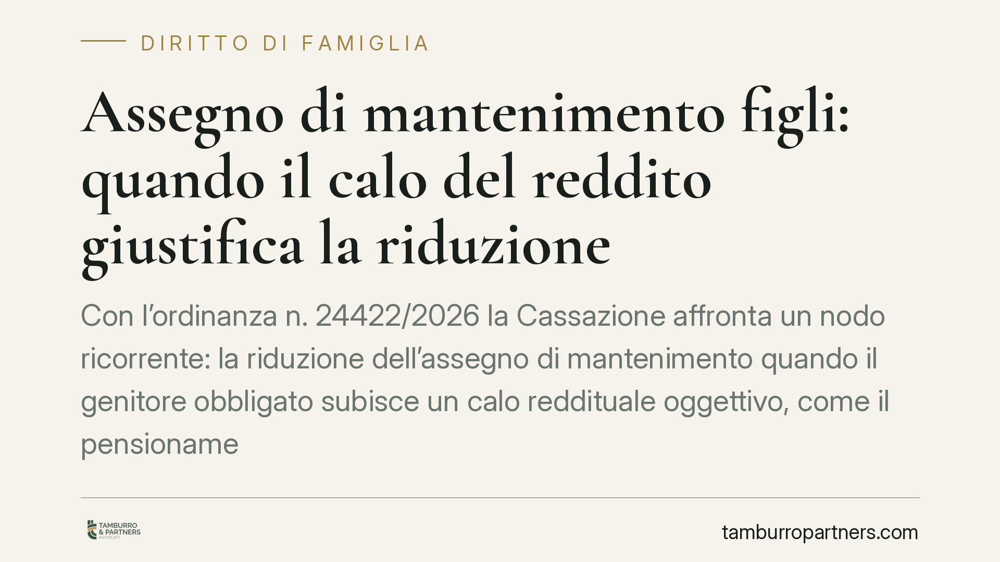

Assegno di mantenimento figli: quando il calo del reddito giustifica la riduzione
Con l'ordinanza n. 24422/2026 la Cassazione affronta un nodo ricorrente: la riduzione dell'assegno di mantenimento quando il genitore obbligato subisce un calo reddituale oggettivo, come il pensionamento. Nessun automatismo, nessuna proporzione matematica rigida: serve una valutazione comparata delle condizioni economiche di entrambi i genitori. Una pronuncia che incide sulle richieste di revisione.

Il caso e la decisione
La vicenda riguarda un genitore che, giunto a fine carriera, chiedeva la riduzione dell'assegno di mantenimento dovuto per i figli e della quota di partecipazione alle spese straordinarie. Il calo del reddito legato al pensionamento è la situazione tipo: un reddito da lavoro che si trasforma in trattamento pensionistico, spesso di importo inferiore.
La Corte di Cassazione, con l'ordinanza n. 24422/2026, ha riconosciuto che un calo reddituale oggettivo può legittimare la revisione dell'assegno. Ma ha posto un paletto chiaro: la riduzione non è automatica né proporzionale in modo meccanico. Non basta dimostrare che il reddito è sceso del 30% per ottenere un taglio dell'assegno del 30%.
Inquadramento normativo
Il riferimento è l'art. 337-ter del Codice civile, che disciplina i criteri per determinare il contributo al mantenimento dei figli. La norma impone di considerare una pluralità di elementi: le attuali esigenze dei figli, il tenore di vita goduto durante la convivenza, i tempi di permanenza presso ciascun genitore, le risorse economiche di entrambi e la valenza economica dei compiti domestici e di cura.
Si tratta di criteri che il giudice deve bilanciare caso per caso. L'assegno non è una formula aritmetica: è il risultato di una valutazione comparata. Per "valutazione comparata" si intende che il giudice non guarda solo al reddito di chi paga, ma mette a confronto le condizioni economiche complessive di entrambi i genitori.
La revisione delle condizioni economiche è possibile quando sopravvengono "giustificati motivi", cioè mutamenti rilevanti e duraturi rispetto alla situazione esistente al momento del provvedimento originario. Il pensionamento può rientrare tra questi, ma va provato come evento oggettivo e non pilotato.
Cosa cambia in concreto
Per il genitore obbligato, la pronuncia è una conferma e insieme un avvertimento. Conferma che il calo di reddito, se reale e documentato, è un motivo legittimo per chiedere la riduzione. Avvertimento perché la riduzione non segue in modo automatico il calo reddituale: il giudice valuta anche se le esigenze dei figli siano rimaste invariate e quale sia la posizione economica dell'altro genitore.
Un esempio chiarisce il punto. Se il padre va in pensione con un reddito dimezzato, ma nel frattempo la madre ha migliorato in modo significativo la propria posizione economica, la riduzione dell'assegno potrà essere più ampia. Se invece la madre versa in difficoltà e i figli hanno esigenze crescenti, il taglio potrà essere contenuto o persino negato.
Lo stesso principio vale per le spese straordinarie, cioè quelle non ricorrenti e non prevedibili (interventi medici rilevanti, attività sportive onerose, viaggi di istruzione). Anche la quota a carico del genitore obbligato può essere rimodulata, ma sempre entro la logica della valutazione comparata.
Resta fermo che un calo di reddito volontario o strumentale, provocato per ridurre l'assegno, non produce alcun effetto favorevole. La prova della genuinità del mutamento è a carico di chi chiede la revisione.
Cosa fare in concreto
- Documenta il calo reddituale con prova oggettiva e completa: cedolino pensionistico, dichiarazioni dei redditi degli ultimi anni, provvedimento di collocamento a riposo.
- Ricostruisci la posizione dell'altro genitore, raccogliendo elementi sulle sue condizioni economiche attuali: è l'altro termine di paragone che il giudice deve considerare.
- Verifica le esigenze aggiornate dei figli, perché un aumento delle loro necessità può bilanciare il calo del tuo reddito.
- Non ridurre unilateralmente l'assegno: finché non interviene un provvedimento di modifica, l'importo stabilito resta dovuto e il mancato pagamento espone a conseguenze.
- Valuta i tempi del ricorso per revisione, da proporre appena il mutamento è effettivo e stabile, evitando iniziative premature o fondate su cali solo temporanei.
La pronuncia conferma una direzione consolidata: il mantenimento dei figli non si piega ad automatismi. Ogni richiesta di modifica va costruita su prove solide e su un confronto reale tra le due posizioni economiche.
---
Contributo informativo a cura di Tamburro & Partners - Avv. Giuseppe Tamburro. Non costituisce parere legale.
Ogni famiglia ha il suo equilibrio.
Separazione, divorzio, affidamento, assegno: se vuoi un confronto riservato su una specifica situazione, scrivi allo studio. Ti rispondiamo entro un giorno lavorativo.